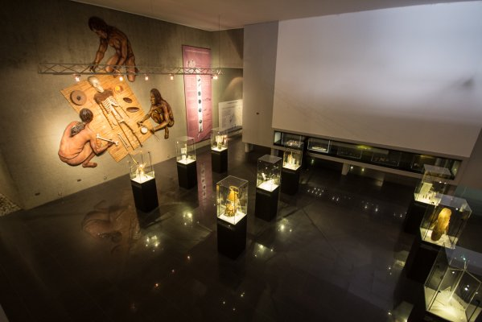

Refugio de un patrimonio cultural que comprende más de 10 mil años de historia, el Museo Arqueológico San Miguel de Azapa es otro de los principales atractivos arqueológicos de la región. Ubicado a un poco más de 10 kilómetros del Valle de Azapa, cuenta con vestigios antropológicos y con alrededores de pintoresca flora y fauna nativa. Privilegiado con favorables condiciones climáticas, en sus afueras es posible encontrar petroglifos mientras que en el interior destaca una muestra cronológica que abarca desde el periodo de los pescadores y cazadores anteriores al periodo de las momias de Chinchorro hasta los pastores aymaras, las cuales pueden ser fotografiadas con previa autorización del museo. La exhibición comprende mas de 20 mil piezas que grafican el desarrollo de la población divididas en tres secciones que comprenden temáticas acerca de la tierra y el mar, los hombres y la producción agrícola y artesanal, y el mundo mágico y religioso.